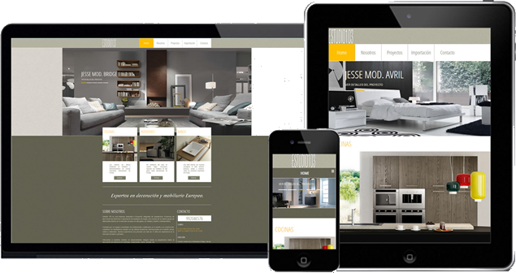
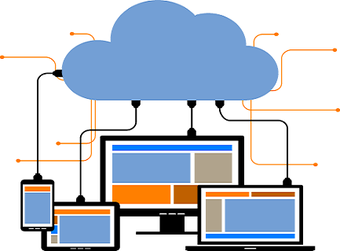

Desarrollo de Sistemas WebEn Datec Consulting hemos entendido, que el desarrollo de software debe asegurar un proceso orientado a la calidad y los estándares de la industria. Mediante la aplicación de un enfoque sistemático, que conlleva al Diseño, implementación y mejora de procesos de construcción de software mediante la aplicación de principios, métodos y herramientas de ingeniería. Es por ello que en DATEC Consulting, tenemos un claro compromiso de fortalecer e integrar a su empresa con sus principales prioridades y Necesidades futuras, desarrollamos nuestros sistemas estrictamente a la medida de su empresa, Es decir en Base a sus requerimientos y/o necesidades específicas, Utilizando íntegramente software libre, orientamos nuestras aplicaciones a Internet, Aseguramos su portabilidad a las principales plataformas operativas. Nuestros resultados son nuestra principal carta de presentación. |
 |
Beneficios de contar con un Sistema WebLos Sistemas Web han demostrado mejores resultados para las empresas frente a los Sistemas Tradicionales Cliente/Servidor, pues le brindan beneficios que estos no pueden tales como: No tiene que pagar Licencias por cada Computadora con el Sistema Instalado pues está en un sólo Servidor Web. Facilidad para acceder al Sistema desde cualquier punto con conexión a Internet. Puede Integrar todas sus tiendas y sucursales; manteniendo información actualizada de stock de productos y de los ingresos y los egresos. Le permite comunicarse con sus clientes de manera más fluída las 24 horas del día |
|  |
Abarcamos en esta división los siguientes ServiciosAdministración de Proyectos de Ingeniería de Software. Desarrollo de soluciones a medida de cada Cliente. Construcción de Interfaces con Otros Sistemas del Cliente. Elaboración de Programas a Medida para cada Cliente. Desarrollo Web. |